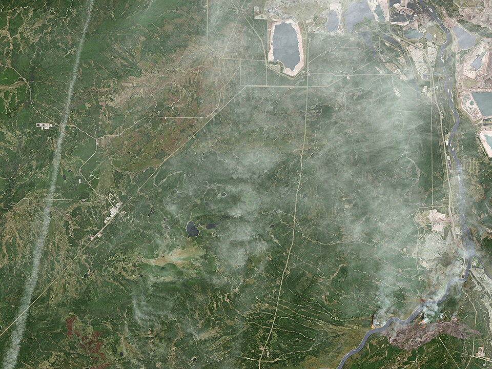
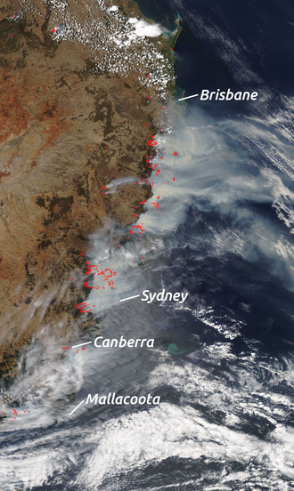

Landscape fire is one of the oldest Earth-system processes on a vegetated planet. Charcoal appears in the geological record soon after land plants, some 420 million years ago, and fire has shaped the evolution of grasslands, savannas, conifer forests and eucalypt woodlands ever since. Satellite products show that something like 3.5 to 5 million square kilometres of land burn every year, an area roughly half the size of the contiguous United States, with the majority of it in the tropical savannas of Africa. Most of that burning is ecologically routine. A small fraction of fires, however, escape control, run into communities and become disasters: they kill people, destroy thousands of structures in a single afternoon, pour smoke over whole continents, and impose economic losses that now reach tens of billions of US dollars per event.
Wildfire science is unusually interdisciplinary. The flame itself is a problem in combustion chemistry and heat transfer; whether it spreads depends on the structure and moisture of porous fuel beds; how fast it spreads depends on wind, slope and the atmosphere above; and whether a town survives depends on ember transport, building materials, warnings, evacuation and the long history of land management and settlement. Fire behaviour is also unusually difficult to predict, because the fire modifies its own environment: a large fire builds its own convection column, draws in its own winds, can generate its own thunderstorm, and throws burning material kilometres ahead of itself.
This course treats wildland fire at the level expected of a graduate student or a practitioner in fire management, emergency planning or atmospheric science. It starts from the physics of flaming combustion, builds up to the operational spread and intensity models used by fire agencies, examines the weather and climate that set fire danger, and then turns to extreme fire behaviour, the wildland–urban interface, remote sensing, fire ecology and management, climate change and smoke. Eight case studies, from Peshtigo in 1871 to Los Angeles in 2025, show these processes at work in real events.
In this course, you will:
- 1.Describe the chemistry of flaming and smouldering combustion and quantify radiative, convective and conductive heat transfer from a flame front
- 2.Characterise wildland fuels by loading, particle size, packing and moisture, and explain timelag classes and fuel models
- 3.Apply the Rothermel surface spread model and empirical rules of thumb to estimate rates of spread
- 4.Compute Byram's fireline intensity and flame length, and use Van Wagner's criteria for crown fire initiation and spread
- 5.Explain how wind, humidity, atmospheric stability, foehn winds and topography control fire behaviour
- 6.Calculate and interpret fire danger indices from the Canadian, Australian and US rating systems
- 7.Analyse plume-dominated fires, pyrocumulonimbus, fire whirls and long-range spotting
- 8.Explain how structures ignite in the wildland–urban interface and what reduces losses
- 9.Use satellite active-fire, fire radiative power and burn-severity products quantitatively
- 10.Evaluate fire regimes, suppression and prescribed burning, climate-driven trends and the health burden of smoke
Figures


Contents
Combustion and Heat Transfer Lesson 2
Wildland Fuels and Fuel Moisture Lesson 3
Rate of Spread Models Lesson 4
Fireline Intensity, Flame Length and Crown Fire Lesson 5
Fire Weather and Topography Lesson 6
Fire Danger Rating Systems Lesson 7
Extreme Fire Behaviour, Pyroconvection and Spotting Lesson 8
The Wildland–Urban Interface and Structure Ignition Lesson 9
Detection, Mapping and Remote Sensing Lesson 10
Fire Regimes, Management, Climate Change and Smoke Case Studies
8 major events analysed References
32 sources for further reading
Image sources
- Figure 1 · Mcmurray oli 2016124 swir lrg. By NASA Earth Observatory / Landsat 8. Public domain. From Wikimedia Commons: https://commons.wikimedia.org/wiki/File:Mcmurray_oli_2016124_swir_lrg.jpg
- Figure 2 · 2019-12-07 East Australian Fires Aqua MODIS-VIIRS-LABELS. By NASA EOSDIS Worldview. Public domain. From Wikimedia Commons: https://commons.wikimedia.org/wiki/File:2019-12-07_East_Australian_Fires_Aqua_MODIS-VIIRS-LABELS.png